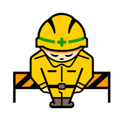

Developer Setup Guide
Get started with Git, GitHub CLI, and Node.js on Windows

This part is currently under construction
This part is currently under construction
Installation Commands
1. Install Git
Git is a version control system needed for managing your code.
winget install -e --id Git.Git
2. Install GitHub CLI
GitHub CLI allows you to interact with GitHub directly from your terminal.
winget install -e --id GitHub.cli
3. Install Node.js & npm
Node.js is a JavaScript runtime, and npm is its package manager.
winget install -e --id OpenJS.NodeJS
What is Winget?
Winget is the Windows package manager. It allows you to install applications directly from the command line, making the installation process faster and easier.
Note: You can also install these tools via .msi or .exe files from the web, but using the terminal is recommended for simplicity.
Create a GitHub Account
If you don't have a GitHub account yet, sign up here:
Create GitHub AccountNeed Help?
If you encounter any technical issues during the setup process, don't
hesitate to reach out. I'll do my best to help you resolve them.
~Shwetank